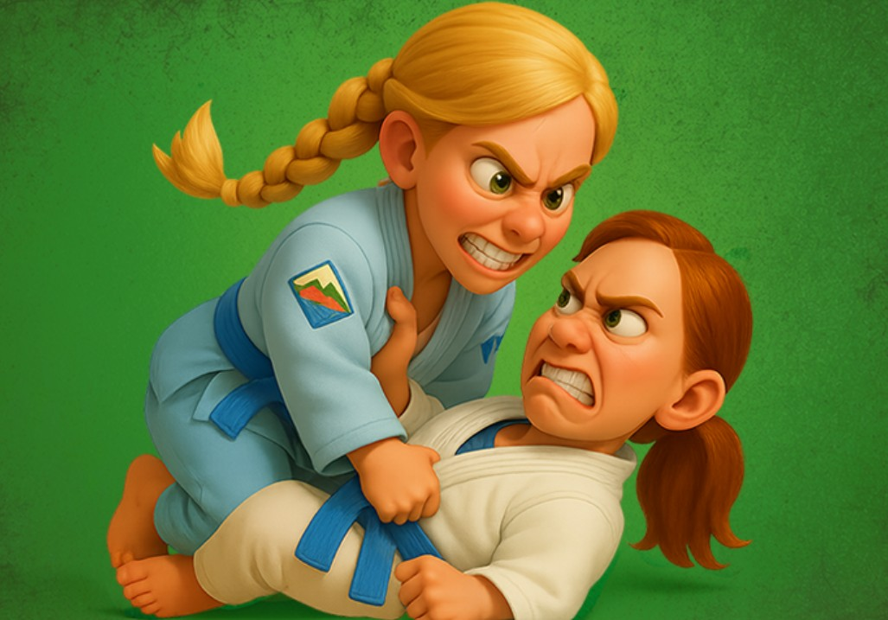
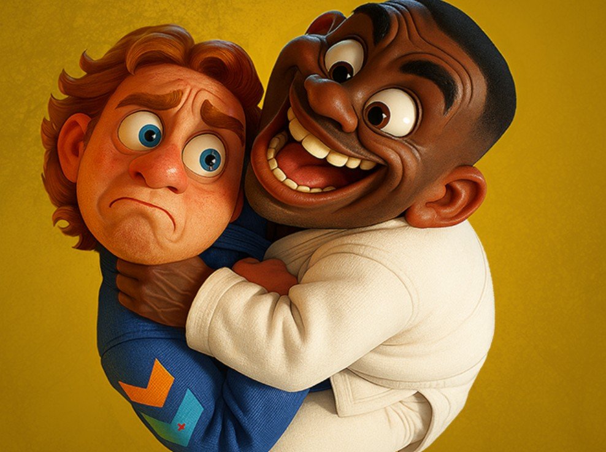
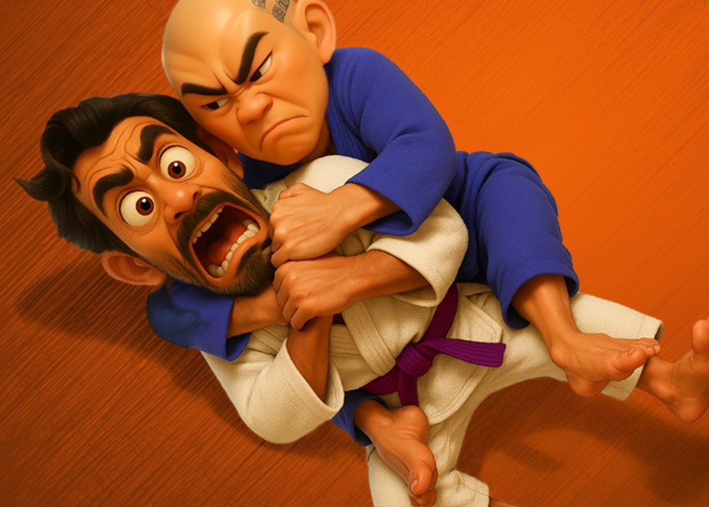
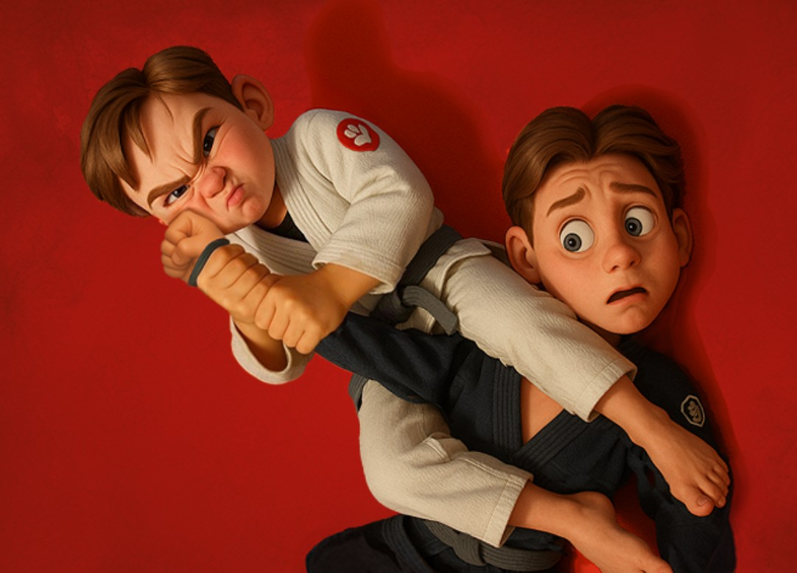
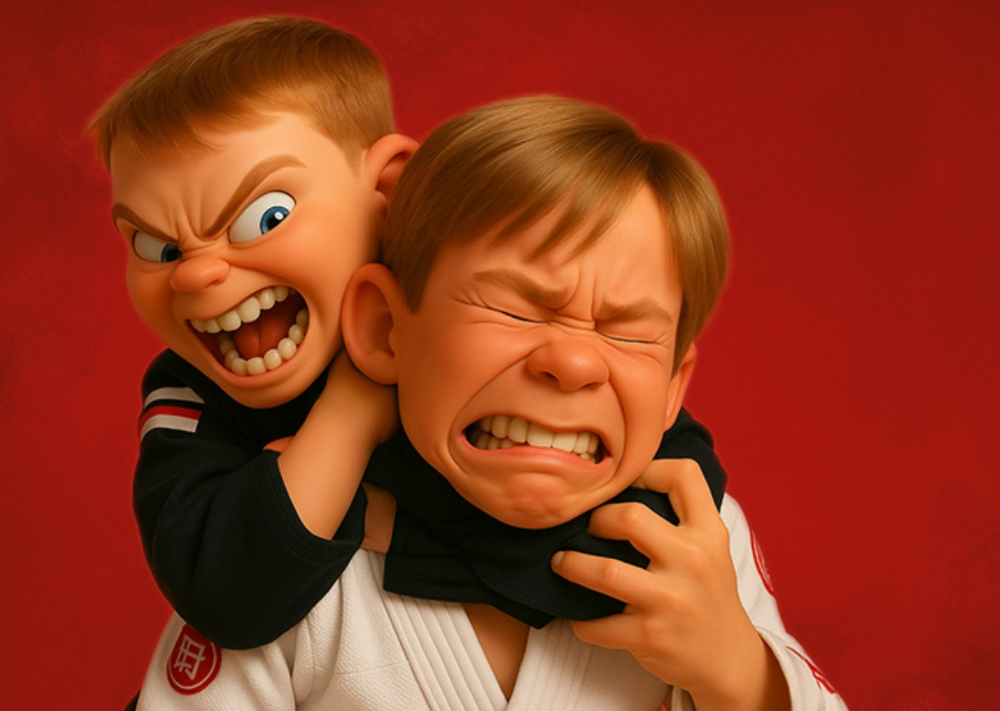
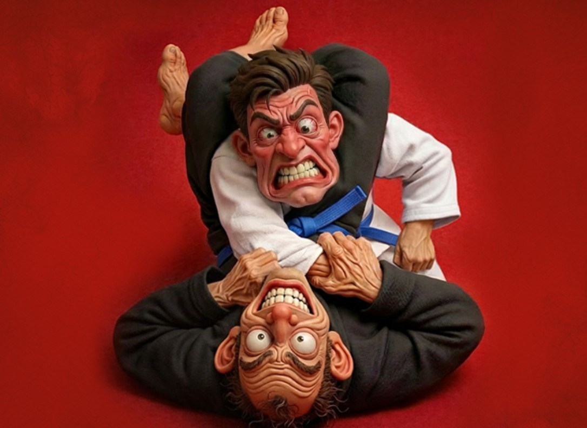

Position
The colors are not just colors
Every card pushes the exchange from one position into another. The system is meant to feel positional, not abstract.
A BJJ Card Game
Inside the Game
ChainGrapplers is about sequence quality. Better transitions create better pressure, better pressure creates better finishing chances, and one bad choice can flip the whole exchange.
Position
Every card pushes the exchange from one position into another. The system is meant to feel positional, not abstract.
Tempo
Playing a second card can build momentum, but it can also leave you exposed on the return if the chain turns against you.
Pressure
Submissions demand an answer immediately, which gives the end of the chain real weight.
Why It Works
ChainGrapplers is a Brazilian Jiu-Jitsu card game made for families, kids, teammates, and curious non-grapplers. If you are looking for a BJJ gift, Jiu-Jitsu accessory, or martial arts game for a child who trains, it gives them a way to bring the academy home.
You do not need to know BJJ to play. The colors and card flow make the game easy to learn, while quietly teaching how positions, pressure, escapes, and submissions connect.
BJJ Positions
ChainGrapplers uses grappling positions as the links between cards. Each card moves the exchange from a starting position toward a better, worse, or more dangerous position.

Half guard sits close to neutral in the game. Both players still have options, but the exchange is starting to take shape.

Mount and full guard represent stronger positional pressure. The attacker has control and direct access to serious submission threats.

Back control is a major advantage. It gives the attacker strong control and creates some of the clearest finishing routes.
BJJ Submissions
Submissions are the finishers in Brazilian Jiu-Jitsu. In ChainGrapplers, they are represented by red pressure: once a submission is active, the defender cannot ignore it, and only an escape can keep the match alive.

The armbar isolates one arm and uses hip pressure to attack the elbow joint.

The classic rear naked choke is applied from the back. In the game, that means you need to work from orange pressure to apply it.

The triangle choke traps the opponent's neck and one arm inside the attacker's legs, turning exposure into submission danger.